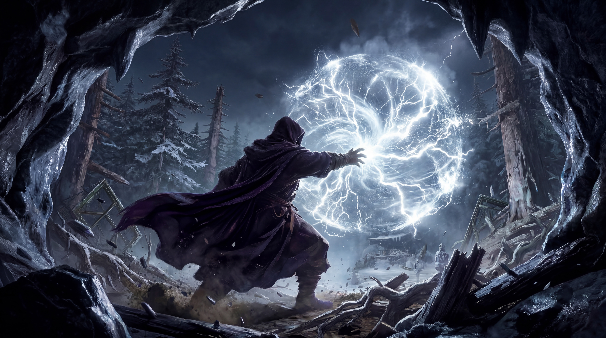
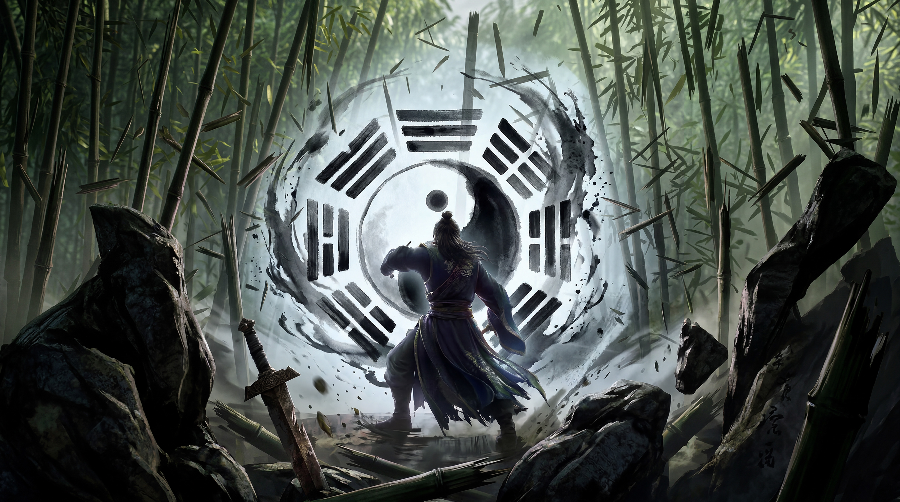
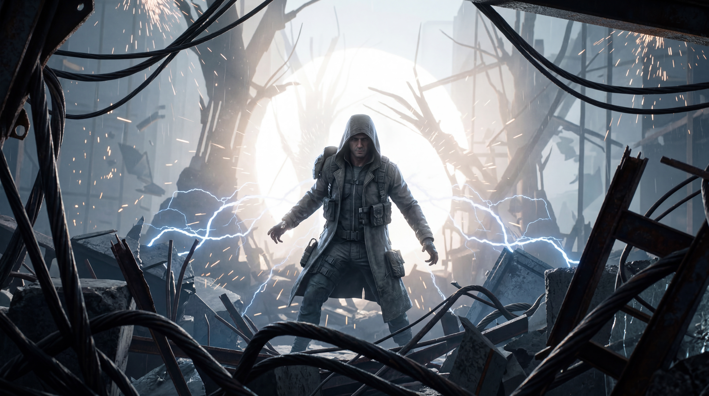
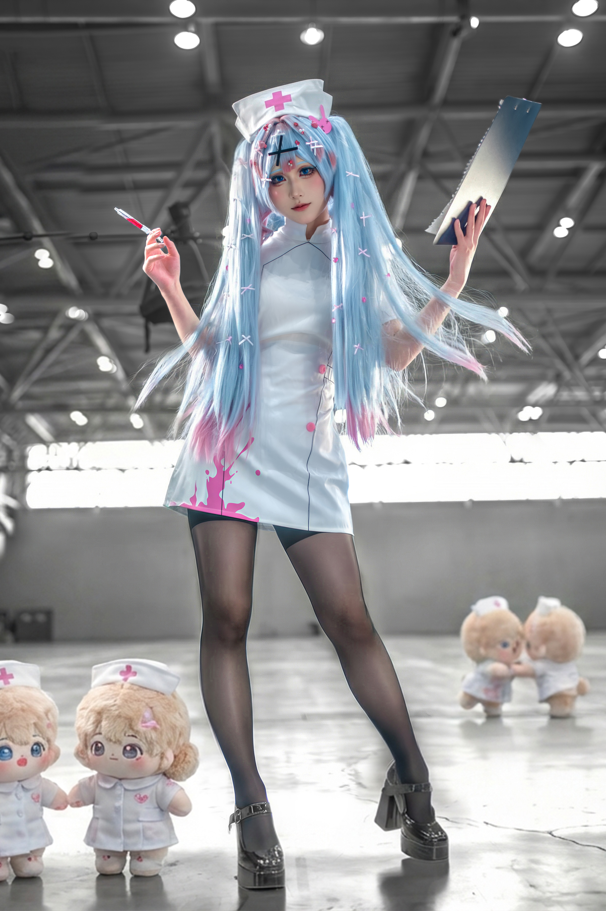
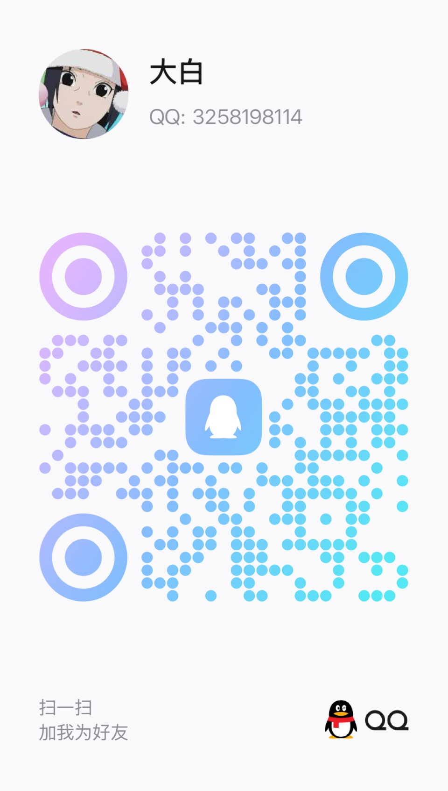

Cosplay 摄影
重点放在角色还原、表演感和氛围调度，竖图更适合呈现服装、妆面、肢体和角色气场， 横图则用来展示场景关系和剧情推进。
创作说明
重点放在角色还原、表演感和氛围调度，竖图更适合呈现服装、妆面、肢体和角色气场， 横图则用来展示场景关系和剧情推进。
以实拍人物为主体，用 AI 扩展背景、空间结构和视觉设定，让照片在概念层面更完整， 但仍然保留摄影本身的质感与人物可信度。
用短片形式展示角色世界观、动态光效、转场和氛围音画设计，适合承接摄影系列的延伸内容， 也适合做展映、社交平台宣传和项目提案展示。
作品展示
AI Video Showcase
2 部 16:9 作品先行承接世界观与节奏，再向下展开静态摄影系列
AI 视频
少女背对镜头沿铁轨全力奔跑，鞋尖踩过水洼炸开水花，长发与衣摆被速度一起拉起，适合做情绪瞬间和动势展示。
AI 视频
基于横幅摄影场景延展出空间位移、镜头推进和体积光变化，适合做作品集中的第二支主片。
AI Fusion Photography
1 张主视觉横幅 + 2 张辅助横幅，先建立核心概念，再补空间延展

16:9 宽幅 暗袍唤雷AI 融合摄影
以压低环境亮度和雷电能量作为主视觉重心，突出角色气场与电光层次。

16:9 宽幅 竹间定乾坤AI 融合摄影
借竹林纵深和人物定势建立东方叙事感，让画面从静态中带出控制力。

16:9 宽幅 废土雷行者AI 融合摄影
把废土地貌、金属质感和雷击动势压进同一画幅，强化末世穿行的速度感。
Cosplay Photography
左侧用竖幅建立角色存在感，右侧用横幅补足场景与叙事推进
 2:3 竖幅
爆爆的迷你军团
2:3 竖幅
爆爆的迷你军团
Cosplay 摄影
用高饱和角色造型和压缩透视建立冲击力，让竖幅主视觉更直接地抓住注意力。
 2:3 竖幅
软萌猫耳小雷姆
2:3 竖幅
软萌猫耳小雷姆
Cosplay 摄影
把柔和表情、毛绒细节和近景氛围压进竖构图里，画面重心更贴近角色本身。
 3:2 横幅
红发魔书小魔女
3:2 横幅
红发魔书小魔女
Cosplay 摄影
以横向场景把角色、道具和情绪一起展开，让魔书叙事感和人物状态同时成立。

2:3 竖幅 初音护士营业中Cosplay 摄影
利用制服符号和角色姿态形成清晰记忆点，让单张竖幅同时兼顾亲和感和完成度。
 3:2 横幅
甜妹与迷你分身
3:2 横幅
甜妹与迷你分身
Cosplay 摄影
利用横幅空间把主角和分身关系拉开，画面会更完整，也更有轻快的戏剧互动感。
工作流程
先明确角色身份、造型关键词和空间气氛，避免后续只剩素材堆叠。
拍清楚人物主光、材质和动作关系，保证 AI 延展时有稳定的真实锚点。
对照片进行背景扩展、气氛统一和视觉草图迭代，控制 AI 只服务整体叙事。
把静态作品转成预告片、动态海报或叙事短片，形成完整的作品展示链路。
联系方式
桌面端双击、移动端单击二维码可放大预览

双击二维码可放大查看，适合电脑端直接扫码联系。
微信
双击二维码可放大查看，适合手机端保存后扫码或直接查看。